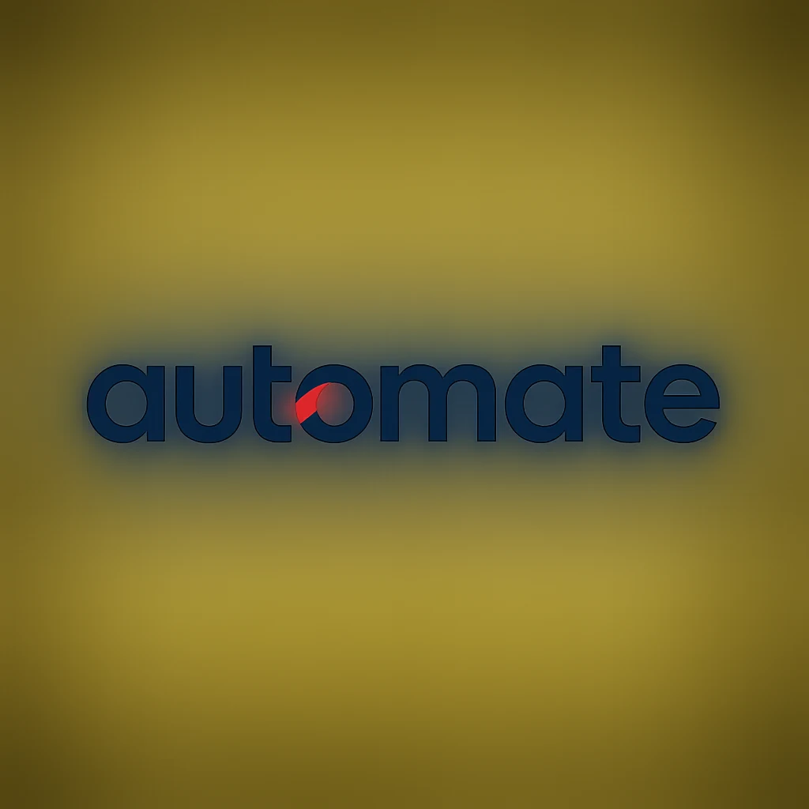
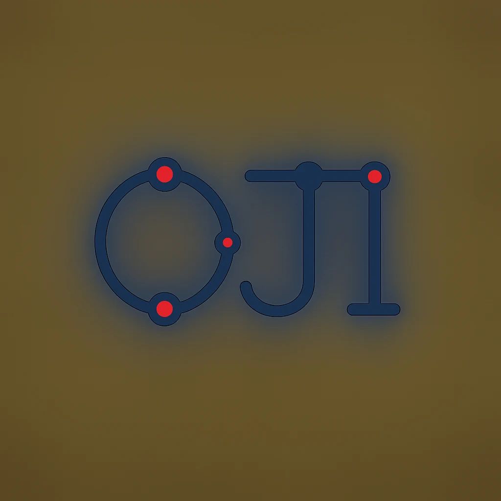
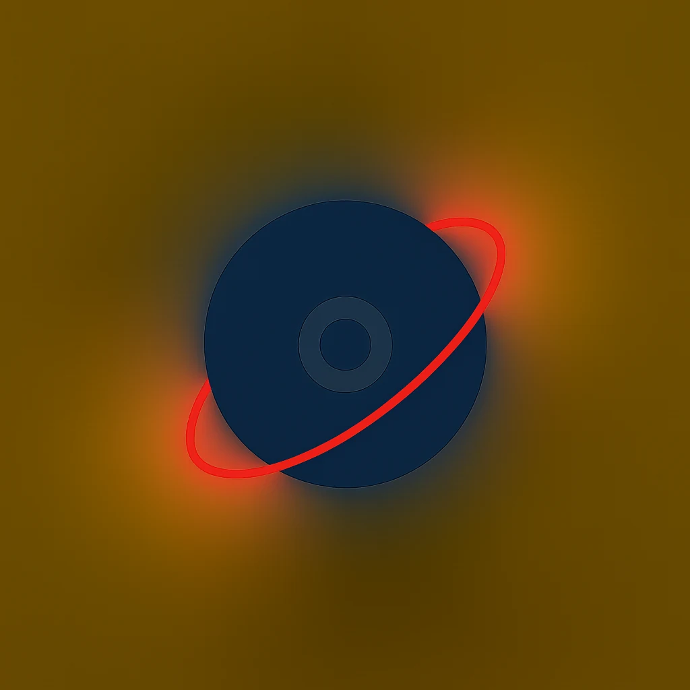
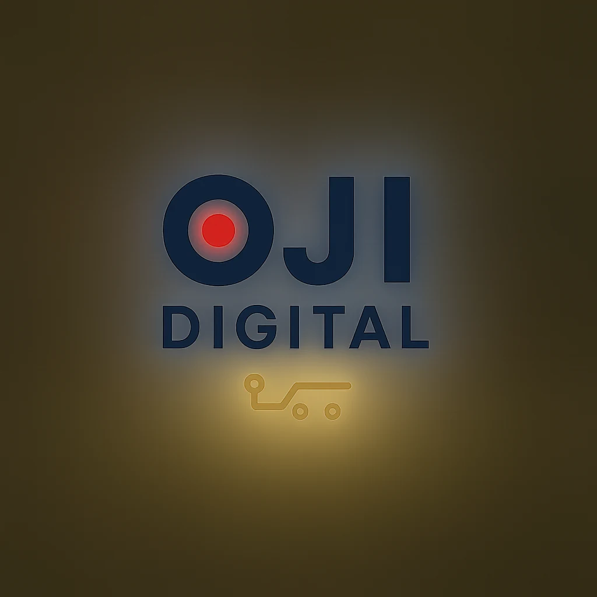
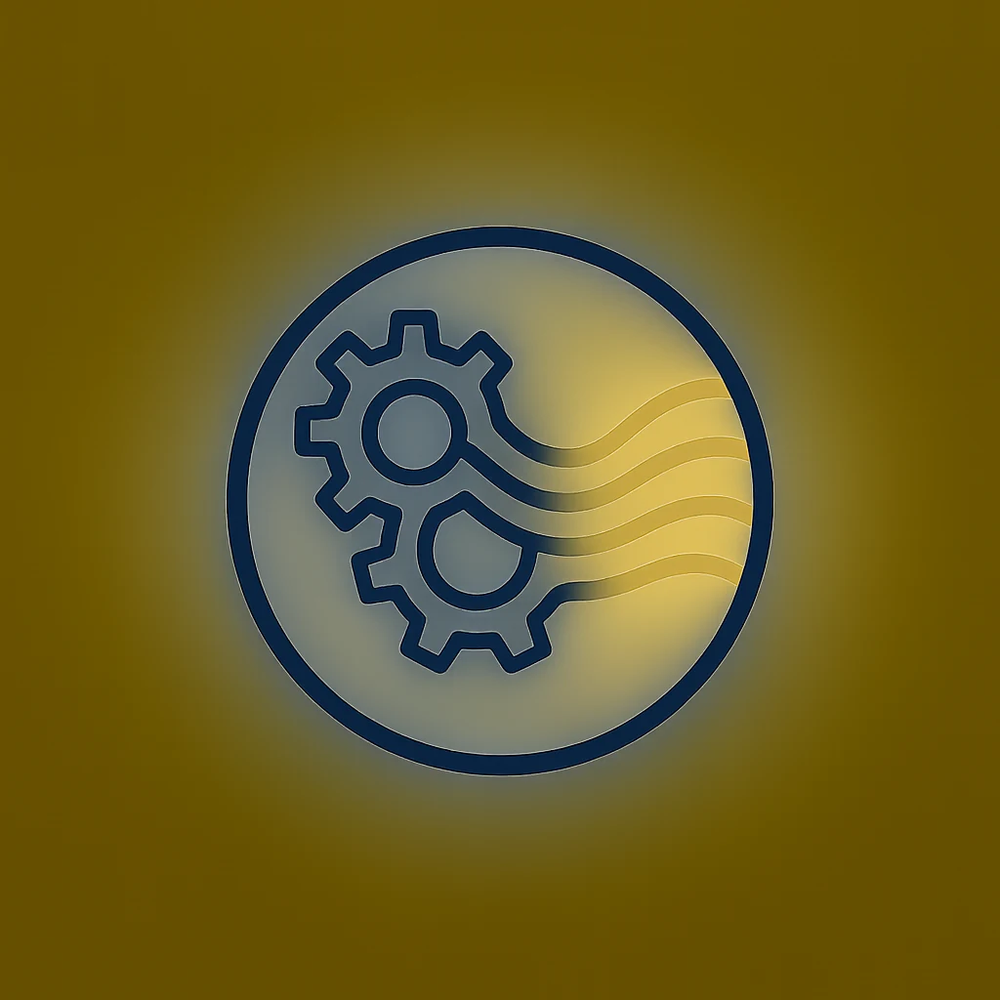
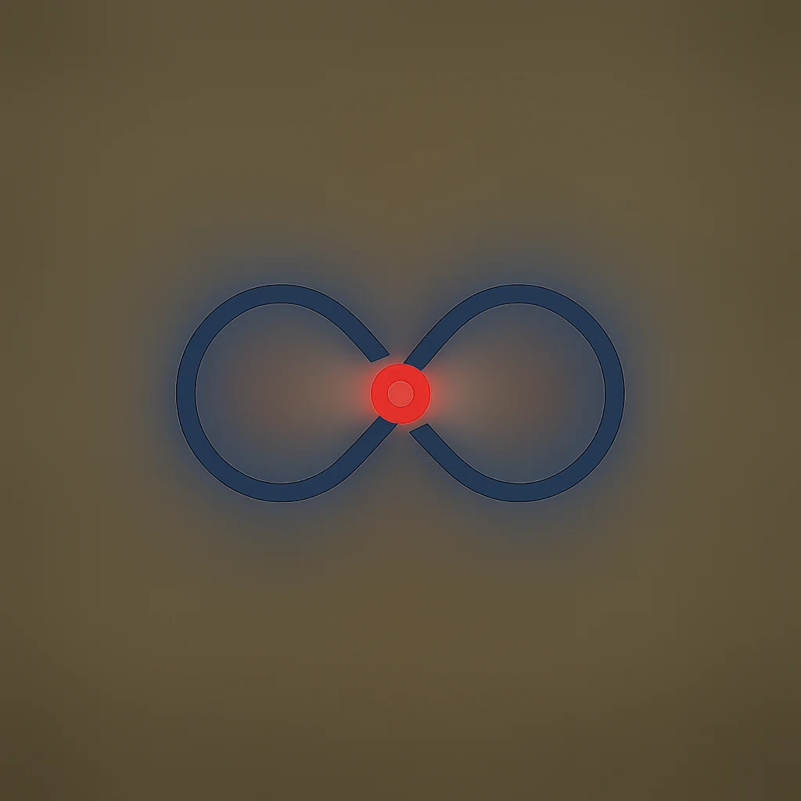
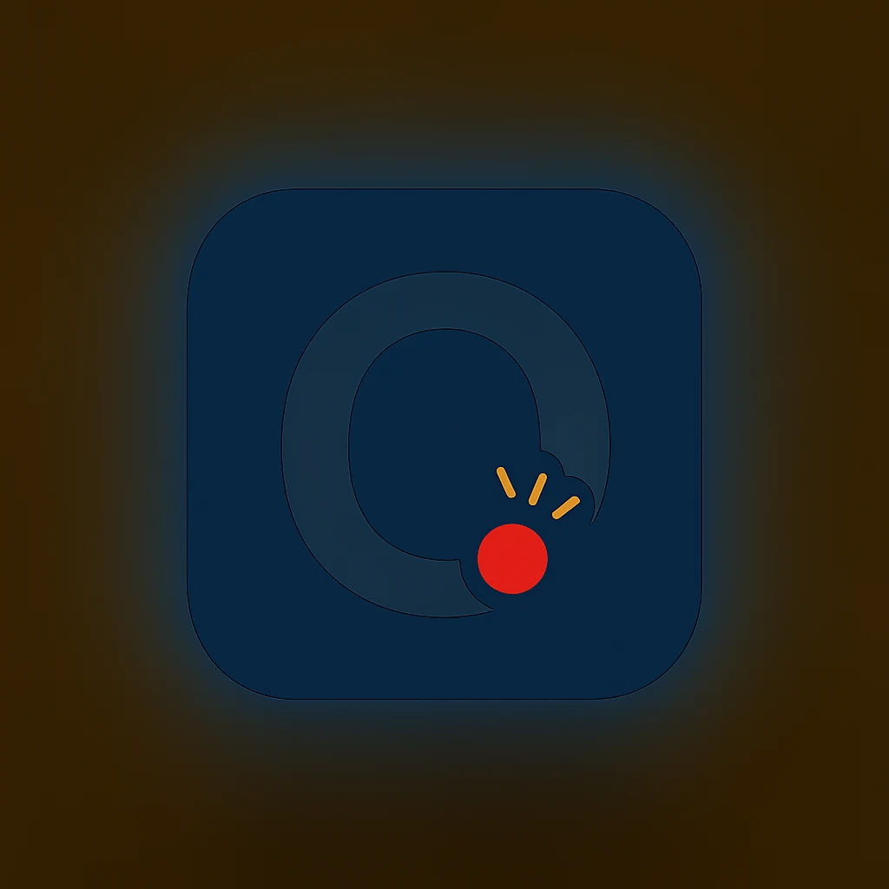
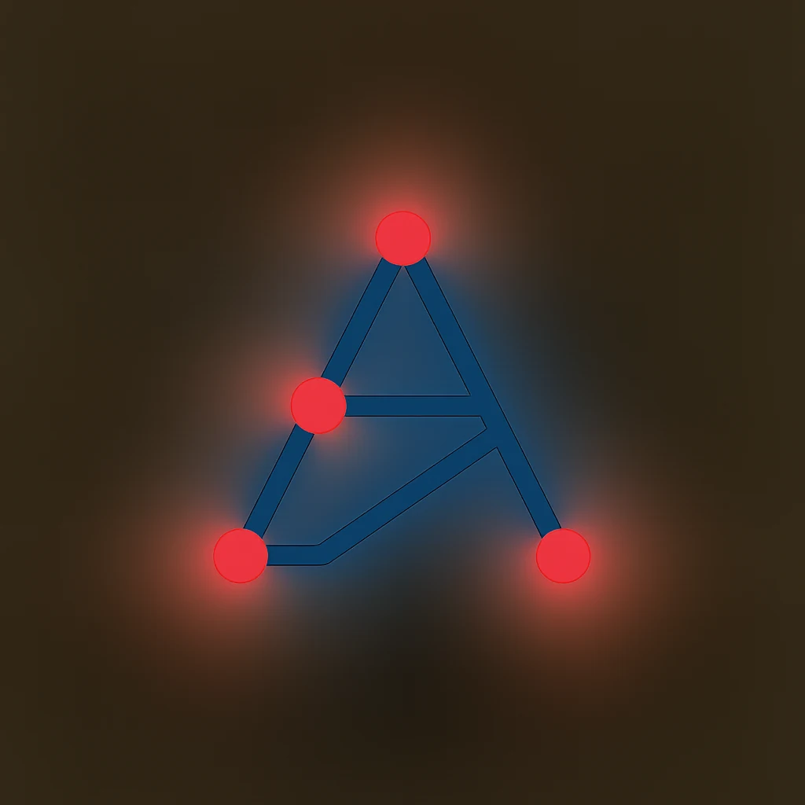
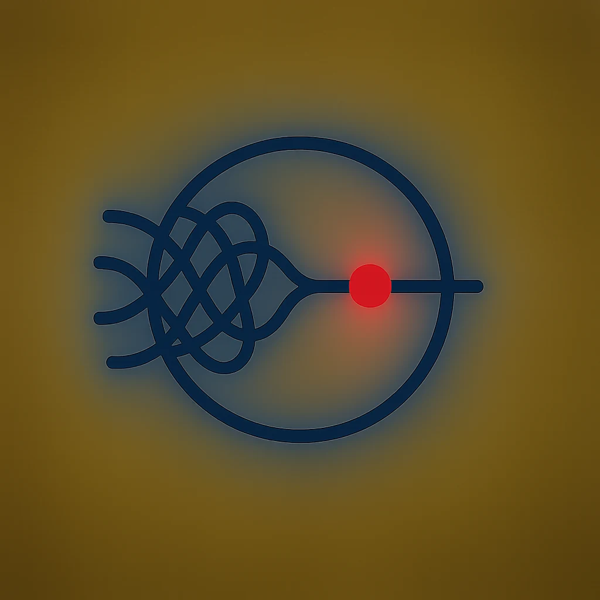
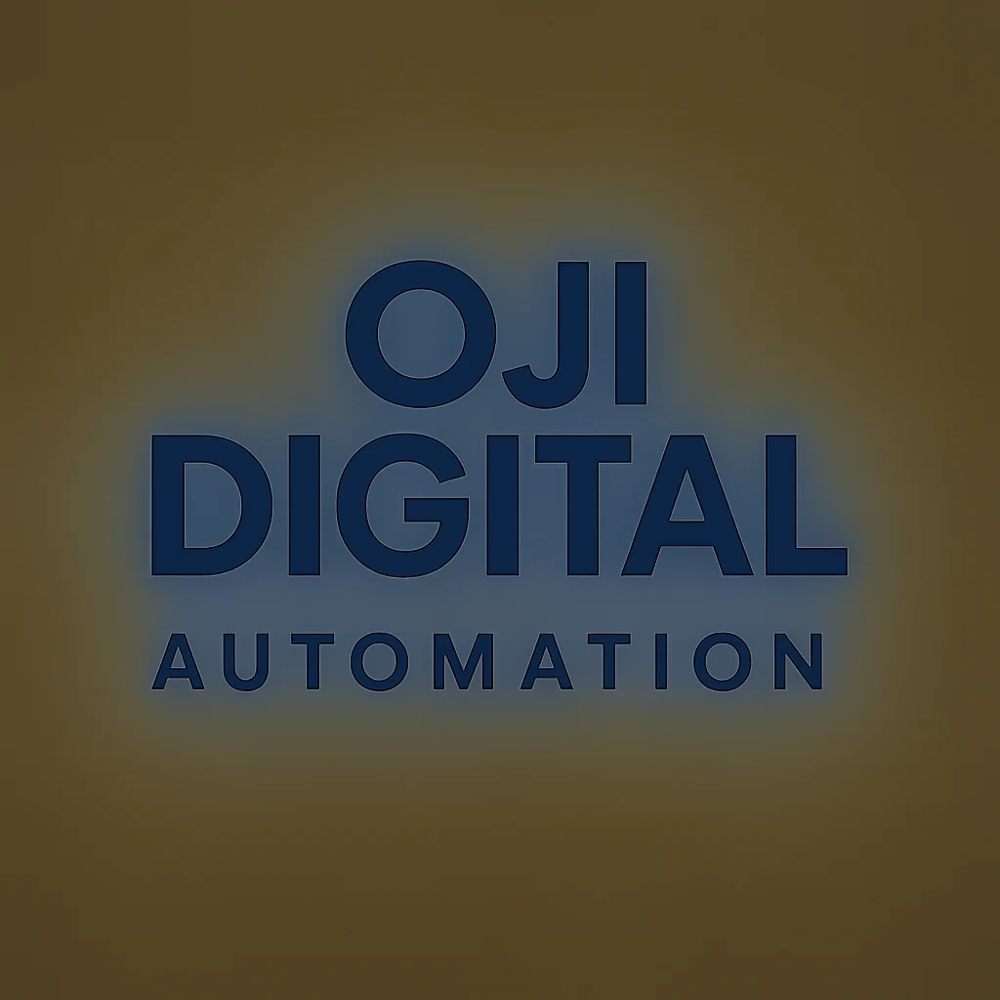

Brand-true lockups (real OJI logo)
 /automate
/automate
AI & AUTOMATION
B · real logo + tagline (stacked)
AI-generated directions (1–10)

1 · “automate” wordmark
Lowercase geometric wordmark, red flow in the ‘a’.

2 · OJI node monogram
“OJI” built from connected automation nodes.

3 · Dot + orbit emblem
OJI circle-and-dot mark with an orbiting flow line.

4 · OJI DIGITAL lockup
Wordmark with the red-dot ‘O’ + automation tag.

5 · Gear → flow badge
Gears dissolving into flowing light, circular.

6 · Infinity flow
Single continuous line, one red node. Minimal.

7 · App icon
Rounded-square navy icon, white O + spark.

8 · Node “A”
Letter A from a small network of nodes.

9 · Converge mark
Tangled lines in → one clean line out.

10 · Stacked wordmark
“OJI DIGITAL / AUTOMATION”, red period.
Pick your favourite(s) — I’ll redraw the winner as a crisp SVG (and an app-icon / favicon set) for the site, emails, and socials.